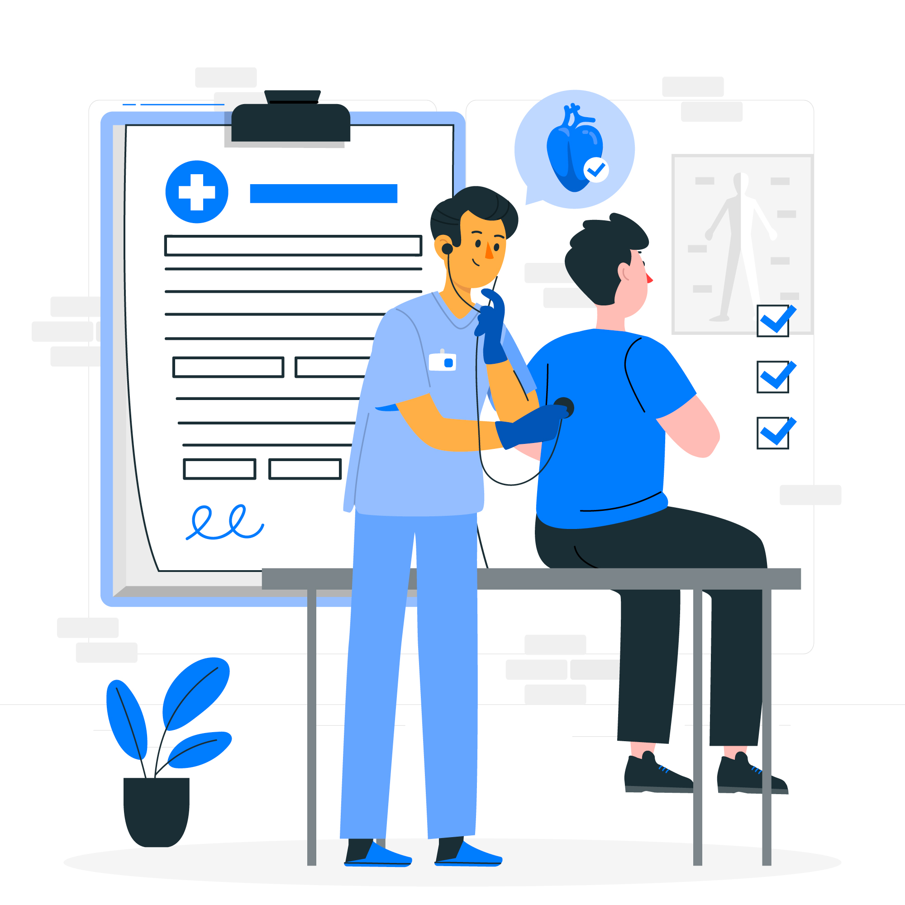
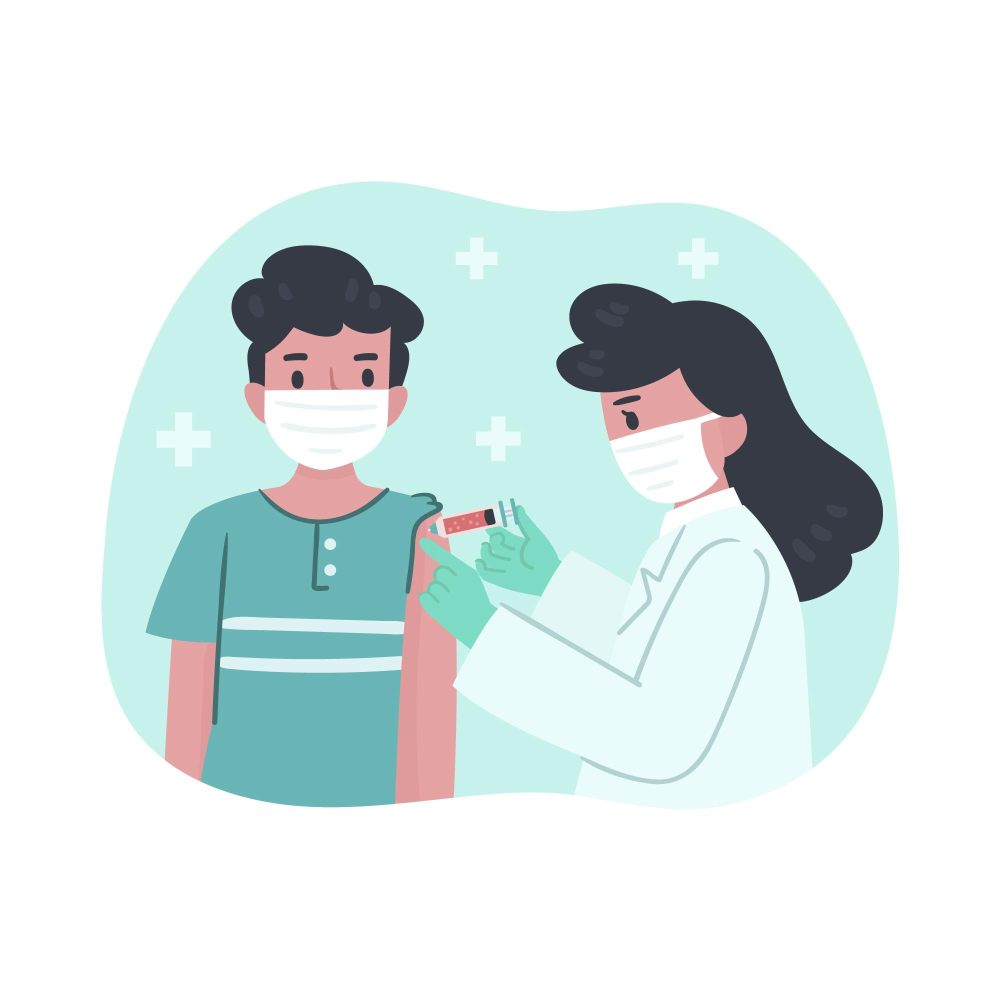
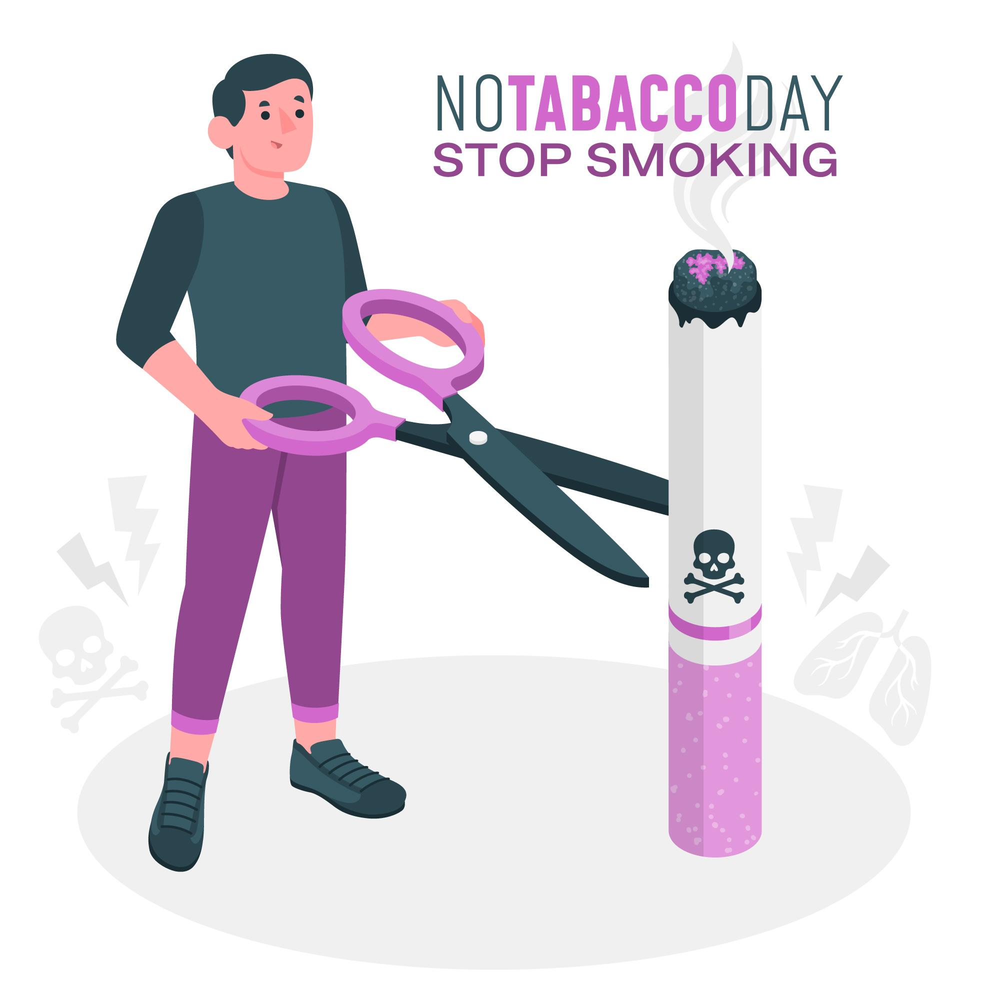

The most serious medical conditions like heart disease, diabetes, and cancer develop in several years and will not show symptoms in their early stages. Regular check-ups and screenings are therefore essential. Routine check-ins with your medical officer helps early detection that makes treatments more effective so that long-term health help can be achieved.Preventive care is one of the most powerful tools we have to keep people healthy. By keeping up with Routine check-ups and screeninggs, it can catch potential problems early before they become serious and harder to control.
Preventive care involves several types of health services meant to identify, prevent, and monitor medical conditions before they become worse. These services usually involve,

Vaccination is a fast, harmless, and effective way to protect you from contagious diseases, before they have time to injure you. It uses your own body's defense mechanisms to build resistance to specific infections and enhances your immune system. Vaccines boosts your immune system to make antibodies, the way it would if it actually encountered a disease. But because vaccines have killed or weakened germs like viruses or bacteria, they can't infect you with the disease or put you at risk for its complications.
Without vaccines, we risk severe illness and disability from infectious diseases like measles, meningitis, pneumonia, tetanus and polio. Some of these conditions can be extremely harmful, if not murdered. World Health Organization places childhood vaccines at more than 4 million lives saved annually alone. Though a few of the diseases are no longer found, their causing germs remain in some or all parts of the world. In the contemporary world, infectious diseases move freely from one country to another and infect anyone unless he or she is immune to it. Two most significant reasons to be vaccinated are to look after ourselves and also to look after other individuals around us. As not everyone can be vaccinated – for example, very young babies, those with severe illnesses or certain allergies – they depend on others being vaccinated so they too are protected against vaccine-preventable disease.
Vaccines defend against several diseases, including,
Some vaccines are currently under research including those that protect against Zika virus or malaria but are not yet available world-wide.

The body is made up of 65% water. Your body needs proper hydration to do your day-to-day activities. It also gives you more energy and helps you sleep better. Correct daily water intake may also maximize certain body processes, including:
Quitting smoking, while difficult to accomplish, is one of the best health choices you ever make. Physical and mental benefits abound. Quitting tobacco takes off heart and lung disease, lowers cancer, and generalizes overall wellness. As you quit smoking, your body starts healing right away, and benefits become visible. But what makes quitting challenging is the addiction to nicotine in tobacco products. Withdrawal from this substance can cause cravings, irritability, anger, sadness, increased hunger, and insomnia. If you’re thinking about quitting or have a quit plan, knowing what to expect is helpful.
After you've quit, your body will begin healing itself within a few minutes, even though healing would take decades. You'll likely have withdrawal symptoms as nicotine eliminates itself from your body and circulates its way out of your system. Even though different people experience differently depending on how long they smoked and the quantity they smoked.
Your body and mind take time to get used to living without tobacco. Depending on the level of your addiction, within one to three months, cravings and other withdrawal symptoms will be over. The duration may differ based on how much and how long you smoked. Because there is a psychological reason to addiction, you can still get occasional cravings to smoke once the physical withdrawal symptoms have passed. This is an added struggle, so learning to manage your triggers and and doing everything you can to remain on track is critical.

There are studies that indicate how small consumption of alcohol is beneficial for us. For example, consuming a glass of wine each night at dinner can be beneficial to your overall wellbeing, like reducing your risk of having cardiovascular disease and diabetes. But most alcohol drinkers do not drink alcohol in small amounts, and research indicates that numerous individuals consume heavily, putting their risk of developing certain diseases, some cancers, and even brain damage on the rise. Because there are more negative risks of consuming alcohol than there are positives, cutting back or even giving it up is far more beneficial to one's overall health and wellbeing. These benefits are,